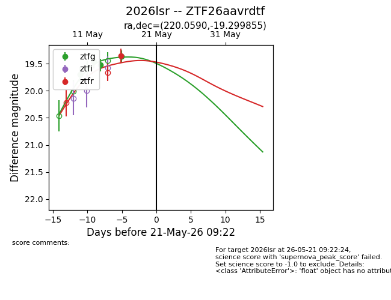
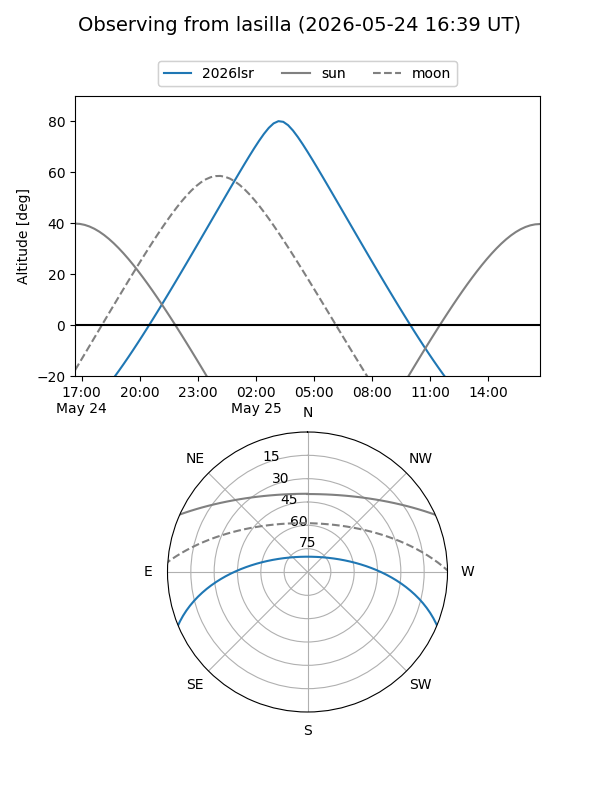
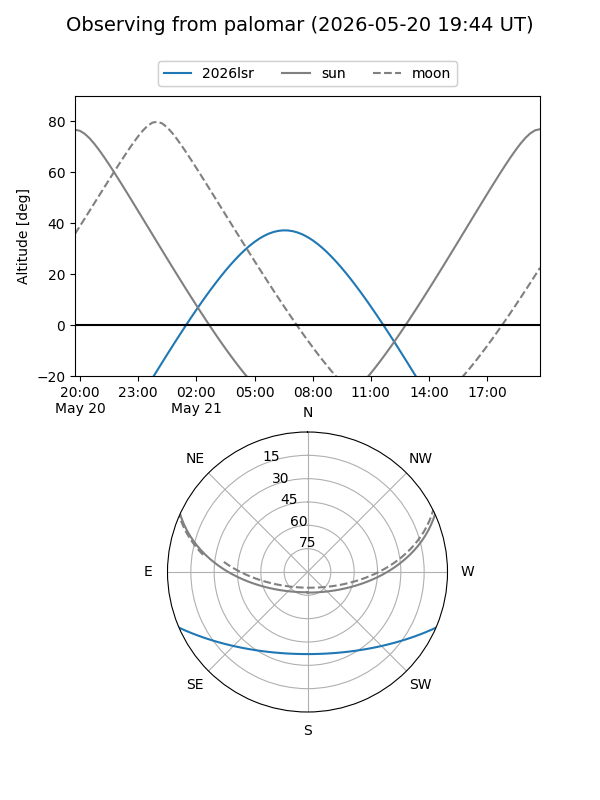
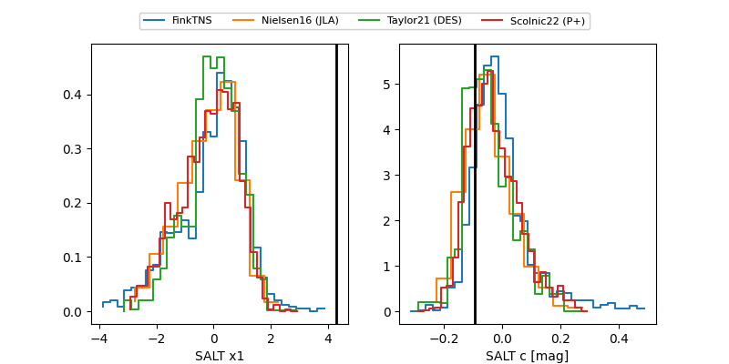

2026lsr
Target 2026lsr at 2026-05-21 09:24
Aliases and brokers:
FINK: link
Lasair: link
ALeRCE: link
TNS: link
YSE: link
alt names
ZTF26aavrdtf (ztf,fink_ztf)
2026lsr (tns,yse)
Coordinates:
equatorial (ra, dec) = 220.0590,-19.29986
equatorial (HMS+DMS) = 14:40:14.17,-19:17:59.48
galactic (l, b) = (335.4414,+36.61107)
Flags:
Photometry:
last ztfg=19.37, ztfr=19.36
4 ztfg, 1 ztfr detections
Lightcurve

Visibility


Additional plots
